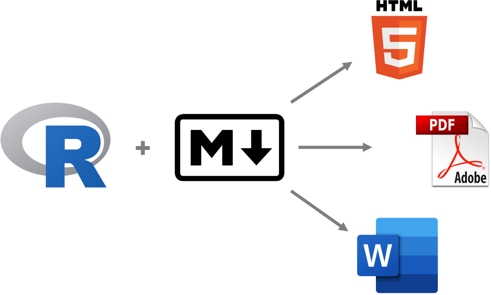

8 RMarkdown
Le RMarkdown est un outil pour générer des documents pouvant contenir des éléments de texte, de code et des éléments visuels tels que des figures. On distingue les fichiers RMarkdown par l’extension .Rmd ou .rmd. Ces derniers sont des documents dynamiques dans lesquels du code R est imbriqué. Le document RMarkdown est un fichier plain text, mais une fois compilé il produit un document HTML, Word ou PDF.
Le RMarkdown est également une librairie R. Vous aurez d’abord à l’installer.
install.packages("rmarkdown")La force du RMarkdown, à la façon de Latex que vous connaissez peut-être, est de séparer le contenu de la mise en page des documents produits. Vous verrez que le contenu, le texte, est rédigé en ‘plain text’ et que des structures séparées définissent le formatage du document. La rédaction est ainsi simplifiée, le format du document bénéficie de beaucoup plus de liberté et le document devient reproductible (!).
Notez que le RMarkdown est un langage compilé, contrairement à R qui est interprété. C’est-à-dire, que le fichier RMarkdown doit être “knit” dans sont entièreté pour produire le document final (html, pdf ou Word).
8.1 Produire un document avec RMarkdown
Pour produire un RMarkdown, il faut :
- avoir la librairie installée sur son ordinateur
- créer nouveau document RMarkdown à partir d’un gabarit (New File > RMarkdown)
- compiler le document (bouton üß∂ knit)
Un document HTML sera sauvé dans le répertorie de travail et s’affichera automatiquement dans RStudio.
8.2 Anatomie du RMarkdown

Un fichier RMarkdown est composé de 3 structures : une portion YAML, une portion Markdown et des blocs de code. Chacune de ces structures occupe une fonction distincte.
YAML
Le YAML est toujours situé au haut du document et définit les métadonnées et les options du document. C’est dans cette section séparée par --- à son début et à sa fin que les informations sur le document et les paramètres servant à la mise en page se trouvent. Les paramètres suivent la syntaxe clé: valeur.
---
title: "Mon titre"
author: "Victor Cameron"
date: "29/03/2022"
output: html_document
---Markdown
Les portions de texte (le contenu) du document constituent le Markdown. Il s’agit de “plain text” avec une syntaxe minimaliste pour contrôler certains éléments de la mise en forme du texte.
# Titre 1
## Titre 2
### Titre 3
Ce mot est en *italique* et celui-ci
en **gras**.
Le texte qui suit est une liste :
- Premier item
- Second item
- Troisième item
Pour faire une énumération :
1. Item 1
2. Item 2
3. Item 3Ajout d’une image.
Hyperlien.
Voici le [lien](https://github.com/EcoNumUdS/BIO500) pour le GitHub du cours BIO500.Une table
| Time | Session | Topic |
|:--------------|:--------:|--------:|
| *left* | *center* | *right* |
| 01:00 - 01:50 | 1 | Anatomy |
| 01:50 - 02:00 | | *Break* |
| 02:00 - 02:45 | 2 | Tables |
| 02:45 - 03:00 | | *Break* |Blocs de code
Un bloc de code peut être ajouté au document en sélectionnant l’icône verte du panneau RStudio. Le code R doit être à l’intérieur d’un bloc de code (code chunk). Par exemple:
```{r}
data(iris)
iris_setosa <- subset(iris, Species == 'setosa')
head(iris_setosa)
```Ce qui produit une fois le fichier compilé (knit) :
Sepal.Length Sepal.Width Petal.Length Petal.Width Species
1 5.1 3.5 1.4 0.2 setosa
2 4.9 3.0 1.4 0.2 setosa
3 4.7 3.2 1.3 0.2 setosa
4 4.6 3.1 1.5 0.2 setosa
5 5.0 3.6 1.4 0.2 setosa
6 5.4 3.9 1.7 0.4 setosaDu code peut être ajouté directement au texte de cette façon :
Le jeu de données *iris* comprend
`r length(unique(iris$Species))` espèces avec un total
de `r nrow(iris)` fleurs mesurées.Pour produire ceci :
Le jeu de données iris comprend 3 espèces avec un total de 150 fleurs mesurées.
Configuration des code chunk
Une bonne pratique est de nommer les blocs de code. Cela s’avère utile pour débogage. Deux blocs de code avec le même nom (label) retourneront un message d’erreur Duplicate chunk label 'chunk name', which has been used for the chunk.
Par exemple, on spécifie le nom ‘plot_iris’ en le spécifiant après le r dans {r plot_iris}.
```{r plot_iris}
plot(iris$Sepal.Length, iris$Sepal.Width)
```echo=FALSE affiche les résultats, mais pas le code.
```{r plot_iris, echo=FALSE}
plot(iris$Sepal.Length, iris$Sepal.Width)
```eval=FALSE affiche le code sans qu’il ne soit évalué.
```{r plot_iris, eval=FALSE}
plot(iris$Sepal.Length, iris$Sepal.Width)
```include=FALSE évalue le code, mais rien n’est affiché.
```{r plot_iris, include=FALSE}
plot(iris$Sepal.Length, iris$Sepal.Width)
```Toutes les options de configuration des code chunk sont retournées par :
str(knitr::opts_chunk$get())List of 56
$ eval : logi TRUE
$ echo : logi TRUE
$ results : chr "markup"
$ tidy : logi FALSE
$ tidy.opts : NULL
$ collapse : logi FALSE
$ prompt : logi FALSE
$ comment : logi NA
$ highlight : logi TRUE
$ size : chr "normalsize"
$ background : chr "#F7F7F7"
$ strip.white : 'AsIs' logi TRUE
$ cache : logi FALSE
$ cache.path : chr "markdown1_cache/html/"
$ cache.vars : NULL
$ cache.lazy : logi TRUE
$ dependson : NULL
$ autodep : logi FALSE
$ cache.rebuild: logi FALSE
$ fig.keep : chr "high"
$ fig.show : chr "asis"
$ fig.align : chr "default"
$ fig.path : chr "markdown1_files/figure-html/"
$ dev : chr "png"
$ dev.args : NULL
$ dpi : int 96
$ fig.ext : NULL
$ fig.width : int 7
$ fig.height : int 5
$ fig.env : chr "figure"
$ fig.cap : NULL
$ fig.scap : NULL
$ fig.lp : chr "fig:"
$ fig.subcap : NULL
$ fig.pos : chr ""
$ out.width : NULL
$ out.height : NULL
$ out.extra : NULL
$ fig.retina : num 2
$ external : logi TRUE
$ sanitize : logi FALSE
$ interval : num 1
$ aniopts : chr "controls,loop"
$ warning : logi TRUE
$ error : logi FALSE
$ message : logi TRUE
$ render : NULL
$ ref.label : NULL
$ child : NULL
$ engine : chr "R"
$ split : logi FALSE
$ include : logi TRUE
$ purl : logi TRUE
$ fig.asp : NULL
$ fenced.echo : logi FALSE
$ ft.shadow : logi FALSEAjuster la taille d’une figure
```{r plot_iris, fig.height = 3, fig.width = 5, fig.align = "center"}
plot(iris$Sepal.Length, iris$Sepal.Width)
```8.3 Autres ressources disponibles en ligne :
- R Markdown: The Definitive Guide https://bookdown.org/yihui/rmarkdown/
- Cheat sheet https://raw.githubusercontent.com/rstudio/cheatsheets/main/rmarkdown.pdf
- RMarkdown gallery https://rmarkdown.rstudio.com/gallery.html
- ResearchDown https://insileco.github.io/ResearchDown/